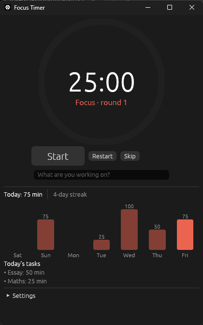
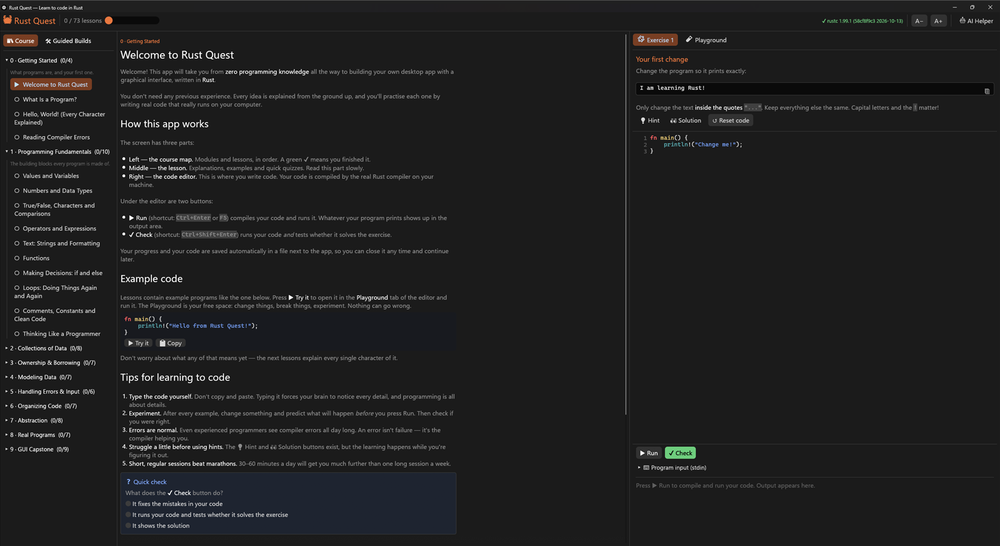
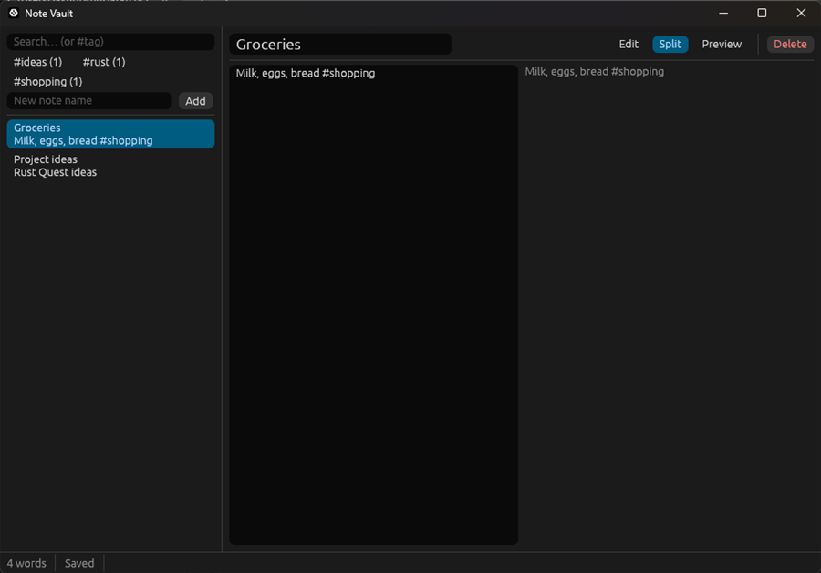
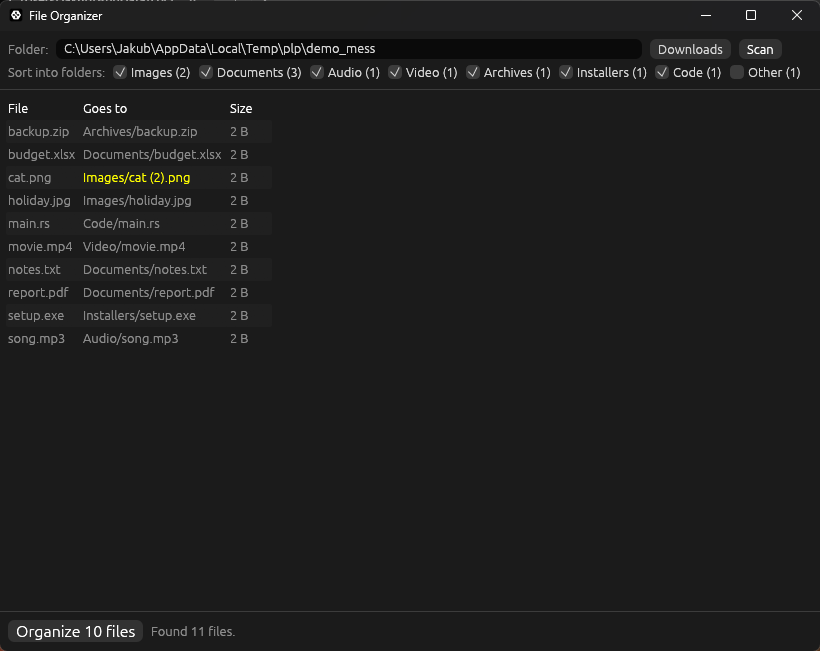

🍅 Focus Timer
A Pomodoro timer with a progress ring, task log, streak counter and weekly chart.
Rust Quest is a desktop app that takes you from "what is a program?" to writing your own desktop apps, with lessons, quizzes and exercises checked by the real Rust compiler.
One portable 8 MB .exe. Needs Rust installed (free, 5 minutes).

Every idea is explained from the ground up, then you practise it straight away in the built-in editor.
No jargon without an explanation. Each lesson builds on the last, and quick checks make sure it stuck.
Press Run and your code is compiled by the Rust you installed. Press Check and tests tell you if you solved it.
Each exercise has a hint and a solution, plus a Playground where you can try anything without breaking a thing.
From Module 6 you build Cargo projects in VS Code, with tests to guide you, just like working programmers.
The course finishes with a full budget tracker GUI, then four guided builds you'll actually use.
One exe, no installer. Progress is saved next to it. No accounts, no tracking, no internet needed.
Ten modules, in order. Projects along the way put each module's ideas to work.
What programs are, your first program, reading compiler errors
Variables, types, operators, strings, functions, if/else, loops
Tuples, arrays, Vec, iterating, HashMap, grids
Project: grade bookMemory, ownership, references, slices, lifetimes, explained gently
Structs, methods, enums, match, Option
Project: game shop inventorypanic, Result, the ? operator, reading input, custom errors
Project: calculatorCargo, modules, crates, tests, docs, clippy
Projects: guessing game, HangmanTraits, generics, closures, iterators, smart pointers
Project: movie libraryFiles, JSON, debugging, more collections, time, threads
Project: command-line to-do appHow GUIs work, egui widgets and layout, app state, background work
Project: Pocket Ledger budget appAfter the course, build bigger apps step by step: Rust Quest on one half of the screen, VS Code on the other.
Every step explains the design, has todo!()s checked by tests, and ends with ideas to make it yours.

A Pomodoro timer with a progress ring, task log, streak counter and weekly chart.

A notes app: Markdown notes as plain files, instant search, #tags, live preview and autosave.

Tidies a messy folder into subfolders by type, shows a preview first, and can undo everything.
Your own desktop chat app for an AI model running on your PC, with streaming replies and saved conversations.
Connect Rust Quest to a free local model in LM Studio, Ollama, llama.cpp or Jan. It sees your lesson, your code and the compiler's errors, so you can just ask.
About ten minutes, once. The full walkthrough is in the user guide.
Run the installer from rustup.rs. If it offers the Visual Studio C++ Build Tools, let it install them.
Put RustQuest.exe in its own folder and start it. If SmartScreen warns, choose More info → Run anyway.
A green ✓ rustc at the top right means you're ready. Later, install VS Code with rust-analyzer for the projects.
Free and open source, for anyone who's ever wanted to learn to code.